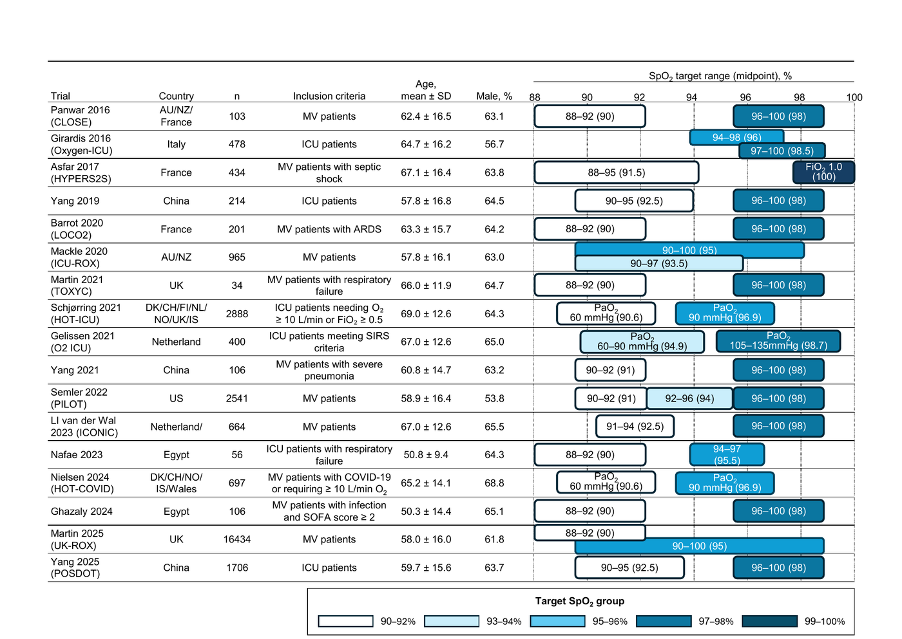
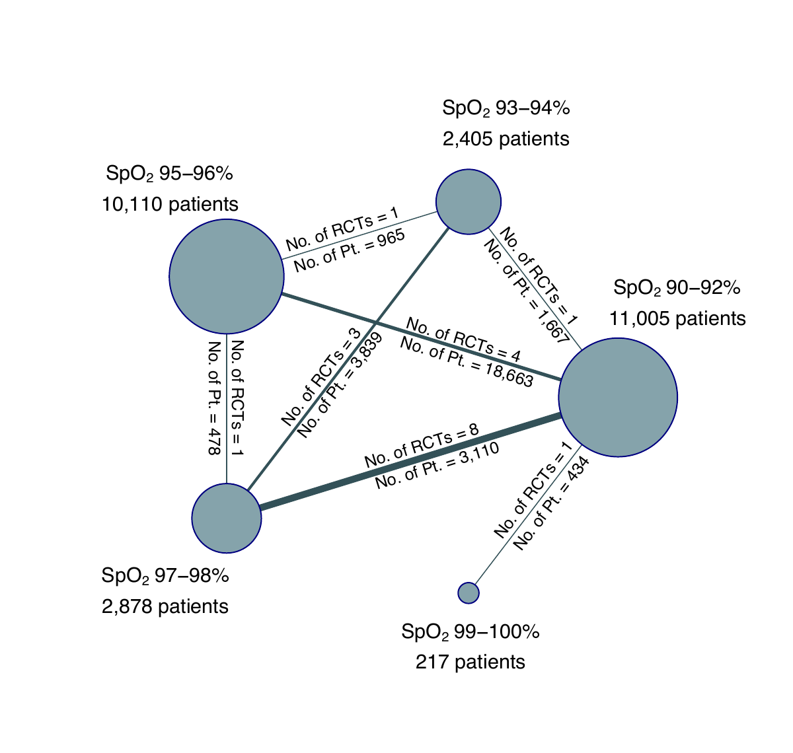
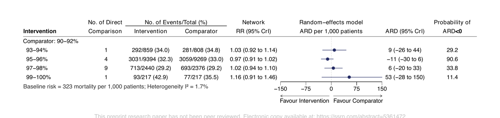
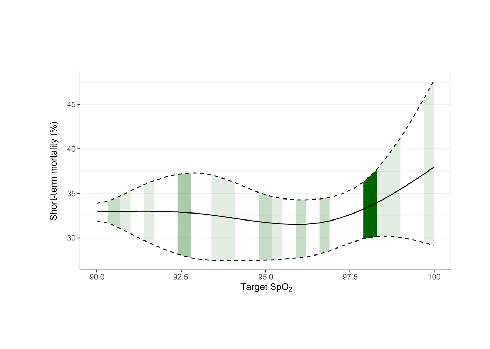
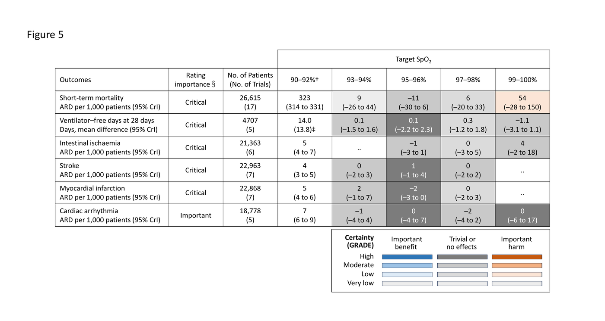
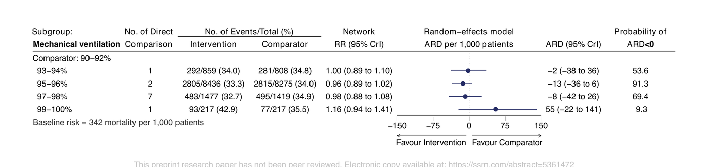

本ページで使用する略語一覧
| 略語 | 正式名称 — 日本語訳 |
| ARD | Absolute Risk Difference — 絶対リスク差 |
| ARDS | Acute Respiratory Distress Syndrome — 急性呼吸窮迫症候群 |
| CrI | Credible Interval — 信用区間（ベイズ統計） |
| DIC | Deviance Information Criterion — 逸脱情報量規準（モデル適合度指標） |
| FiO₂ | Fraction of Inspired Oxygen — 吸入酸素濃度 |
| GRADE | Grading of Recommendations Assessment, Development and Evaluation — 推奨の強さ評価手法 |
| MID | Minimal Important Difference — 最小重要差 |
| MV | Mechanical Ventilation — 人工呼吸管理 |
| NMA | Network Meta-Analysis — ネットワークメタ解析 |
| PaO₂ | Partial Pressure of Oxygen in arterial blood — 動脈血酸素分圧 |
| RCT | Randomised Controlled Trial — ランダム化比較試験 |
| RR | Risk Ratio — リスク比 |
| SpO₂ | Peripheral oxygen saturation — 経皮的動脈血酸素飽和度（パルスオキシメトリー） |
| SUCRA | Surface Under the Cumulative Ranking Curve — 累積ランク確率曲線下面積（治療ランキング指標） |
| VFD | Ventilator-Free Days — 人工呼吸器離脱日数（28日間） |
SECTION 1 なぜこの研究が必要か
酸素化ターゲットをめぐる論争
急性呼吸不全は世界で年間1,300〜2,000万人が発症し、死亡率は約35〜45%にのぼる。ICU では酸素療法は事実上全例に行われるが、至適 SpO₂ ターゲットはガイドライン間で大きく異なる。英国胸部学会（BTS）は SpO₂ 94〜98%、ARDS ネットは 88〜95% を推奨するが、いずれも根拠となるエビデンスは限られていた。
酸素は両方向に有害となりうる。低酸素は細胞エネルギー障害を引き起こし、一方で過酸素は活性酸素種を産生し、血行動態異常・肺炎症・機械的換気中の肺傷害を悪化させる。この「二相性酸素毒性（biphasic oxygen toxicity）」の概念から、最適 SpO₂ ターゲットを同定することは臨床的意義が大きい。
ペアワイズメタ解析の限界と NMA の必要性
従来の RCT のほとんどは「低め」対「高め」という二群比較のみであった。しかし各試験の「低め」と「高め」のターゲット値は試験ごとに大きく異なり、ペアワイズメタ解析では複数の異なる酸素化レベルを同時比較することができない。その結果、「SpO₂ 何%が最も良いか」という問いに答えられていなかった。
本研究は ベイズ法を用いたネットワークメタ解析（NMA）を適用し、SpO₂ ターゲットを 90〜92%・93〜94%・95〜96%・97〜98%・99〜100% の5群に分類して同時比較した。さらに用量反応メタ解析により、90〜100% の全スペクトルにわたる SpO₂ と死亡率の連続的な関係も可視化した。2025年に発表された大規模試験 UK-ROX（Martin 2025、n=16,434）を含む最新エビデンスを網羅した点でも新規性が高く、本解析は日本 ARDS 診療ガイドライン 2026（JSICM・JRS・JSRCM）の基礎エビデンスとして活用された。
SECTION 2 研究方法の概要
対象試験と SpO₂ 分類
PubMed・Cochrane CENTRAL・Web of Science を 2024年10月・2025年6月まで系統的に検索した。18歳以上の急性呼吸不全または酸素療法を要する急性疾患患者を対象とし、特定の酸素化目標値を設定した RCT を組み入れた（COPD 単独・心停止後・外傷・脳卒中・術後ケアのみを対象とした試験は除外）。
SpO₂ ターゲットは実際に観察された SpO₂ 値ではなく、試験プロトコルで事前規定された値で分類した。PaO₂ 目標は標準換算式で SpO₂ に変換した。通常ケア群（SpO₂ 上限規定なし）は 90〜100% として扱った。最終的に 17 RCT・26,615 例が解析対象となった。
主要・二次アウトカムと最小重要差（MID）
| 種別 | アウトカム | MID |
|---|---|---|
| 主要 | 短期死亡率（28〜30日全死亡、未報告時は ICU 死亡） | ARD 15/1000 |
| 二次（有効性） | 人工呼吸器離脱日数（VFD at 28 days） | 2日 |
| 二次（安全性） | 腸管虚血・脳卒中・心筋梗塞・心房細動 | ARD 20/1000 |
Figure 1. 組み入れ試験の特徴（17 RCT）
各試験の国・症例数・対象患者・SpO₂ ターゲット範囲を示す。バーの色は SpO₂ グループに対応（白灰：90〜92%、水色：93〜94%、青：95〜96%、濃青：97〜98%、最濃青：99〜100%）。

ARDS, 急性呼吸窮迫症候群; AU, オーストラリア; CH, スイス; COVID-19, 新型コロナウイルス感染症; DK, デンマーク; FI, フィンランド; ICU, 集中治療室; IS, アイスランド; MV, 人工呼吸管理; NL, オランダ; NO, ノルウェー; NZ, ニュージーランド; PaO₂, 動脈血酸素分圧; SIRS, 全身性炎症反応症候群; UK, 英国; US, 米国
* 主要アウトカム解析に含まれた症例数。† 「通常酸素療法」群は主治医裁量で酸素投与され、上限 SpO₂ の規定なし。想定ターゲット範囲を 90〜100% として扱った。
Figure 2. ネットワーク図（短期死亡率）
線の太さは比較試験数に、ノードの大きさは各群の患者数に比例する。SpO₂ 95〜96% 群（10,110例）が最大のノードを形成しており、UK-ROX（n=16,434）が大部分を占める。SpO₂ 90〜92% 群（11,005例）が第2位のノードを形成。

Pt., 患者数; RCT, ランダム化比較試験; SpO₂, 経皮的動脈血酸素飽和度
SUMMARY 第1章のキーメッセージ
SECTION 3 SpO₂ 95〜96% が最高ランク
SpO₂ 95〜96% が死亡率低下の確率最高
ベイズ NMA では、90〜92% を参照群として各 SpO₂ ターゲット群の短期死亡率の ARD を推定した。SpO₂ 95〜96% 群が最も死亡率を低下させる確率が高く、ARD −11/1000（95% CrI: −30〜6）、ARD < 0 の事後確率 90.6% という結果であった（SUCRA 0.882、ランク1確率 67.5%）。ただし事前規定した MID（−15/1000）には到達しなかった（エビデンスの確実性：中等度）。
一方、SpO₂ 99〜100% 群は最も転帰不良の可能性が高く（ARD +53/1000、95% CrI: −28〜150、ARD < 0 の確率わずか 11.4%、SUCRA 0.090）、過度な高酸素を避けるべき根拠となる。SpO₂ ターゲットが低すぎても高すぎても転帰が悪化する「二相性毒性」のパターンが示された。
ARD（vs 90〜92%）
事後確率
（ランク1確率 67.5%）
ARD（vs 90〜92%）
基準死亡率
（17 RCT）
Figure 3. NMA フォレストプロット（短期死亡率）
SpO₂ 90〜92% を参照群として各ターゲット群のリスク比（RR）と絶対リスク差（ARD per 1,000 patients）を示す。右端の列は ARD < 0（介入が優位）の事後確率。

ベースラインリスク = 1,000人あたり323死亡。不均一性 I² = 1.7%。ARD, 絶対リスク差; RR, リスク比
Table 1. SUCRA とランキング（短期死亡率）
SUCRA は各群が「ランク1（最も効果的）」である確率の積分値（0〜1）。値が高いほど死亡率低下効果が大きい可能性を示す。
| SpO₂ ターゲット | ランク1確率 | ランク2確率 | ランク3確率 | SUCRA | 中央ランク（95% CrI） |
|---|---|---|---|---|---|
| 95〜96% | 67.5% | 21.7% | 7.9% | 0.882 | 1（1〜4） |
| 90〜92% | 6.0% | 44.8% | 33.6% | 0.600 | 2（1〜4） |
| 97〜98% | 11.0% | 17.3% | 33.2% | 0.489 | 3（1〜5） |
| 93〜94% | 11.7% | 13.8% | 21.7% | 0.437 | 4（1〜5） |
| 99〜100% | 3.8% | 2.4% | 3.5% | 0.090 | 5（1〜5） |
CrI, 信用区間; SUCRA, Surface Under the Cumulative Ranking Curve
SUMMARY 第2章のキーメッセージ
SECTION 4 SpO₂ 95.8% — 死亡率ナディル
二相性の曲線：最適点は SpO₂ 95.8%
モデル適合度が最も良好であったのは 2ノットの自然スプライン関数（DIC が最小）であり、これを用いた用量反応解析では SpO₂ 95.8% で死亡率が最小となる逆 U 字型曲線が描かれた。変曲点は 91.5% と 95.8% の2点に同定された。この点から左右いずれにずれても死亡率が上昇するパターンは NMA の結果と一致し、低酸素（細胞エネルギー障害）と過酸素（活性酸素・炎症・肺傷害）の双方向の有害性という生物学的妥当性を支持する。
Figure 4 の緑のゾーンは試験ポイント推定値と CrI から算出した 95% CrI を示し、濃い緑は複数の試験によりカバーされているターゲット範囲を示す。SpO₂ ≥ 97% の領域は試験数・患者数が少なく（99〜100% 群 217 例のみ）CrI が大きく広がり、推定の不確実性が高い。
Figure 4. SpO₂ ターゲットと短期死亡率の用量反応曲線
縦軸：短期死亡率（%）、横軸：SpO₂ ターゲット（%）。実線が事後中央値の死亡率、破線が 95% CrI。緑ゾーンは試験推定値からの 95% CrI。濃い緑は複数試験でカバーされた範囲。変曲点は 91.5% と 95.8%（死亡率ナディル）。

2つの独立した手法の収束： NMA（5群同時比較）と用量反応解析（連続関数）はそれぞれ独立した統計モデルを用いながら、ともに「SpO₂ 約 95〜96% が最適」という同一の結論に到達した。この収束が本研究の主要なメッセージの信頼性を高める。
SUMMARY 第3章のキーメッセージ
SECTION 5 GRADE サマリーと安全性プロファイル
二次アウトカムに MID を超える差なし
VFD（28日）および安全性アウトカム（腸管虚血・脳卒中・心筋梗塞・心房細動）のいずれにおいても、いずれの SpO₂ ターゲット群も 90〜92% 参照群との差が MID を超えることはなかった。安全性イベントは希少であり、本解析では検出力が不十分であった可能性がある。
Figure 5 はすべてのアウトカムを一望できる GRADE エビデンス要約表である。セルの色は GRADE 確実性（高・中等度・低・非常に低い）と、効果が MID を超えているか否か（重要な便益 / 些細・効果なし / 重要な有害）を組み合わせて表示する。
Figure 5. SpO₂ ターゲットの便益‐リスクプロファイル（GRADE エビデンス要約）
縦軸：アウトカム種別（短期死亡率・VFD・安全性4種）。横軸：SpO₂ ターゲット。数値は ARD/1000（VFD は平均差、日）。括弧内は 95% CrI。セルの色は GRADE 確実性 × 効果の方向・大きさを示す。

§ アウトカム重要度は2026 ARDS 診療ガイドライン委員会（JSICM・JRS・JSRCM）による 1〜9 点スコアで評価（7〜9：重要、4〜6：重要、1〜3：重要度低）。† ベースラインリスク：90〜92% 群との比較。‡ 平均（標準偏差）。ARD, 絶対リスク差; GRADE, 推奨の強さ評価; N/A, データなし
SUMMARY 第4章のキーメッセージ
SECTION 6 人工呼吸患者サブグループ
人工呼吸患者でも SpO₂ 95〜96% が最高ランク
全症例の約 90% が機械的換気下であることを踏まえ、人工呼吸管理患者のみのサブグループ解析を実施した。SpO₂ 95〜96% は参照群（90〜92%）に対して ARD −13/1000（95% CrI: −36〜6）、ARD < 0 の事後確率 91.3% と主解析と同様のパターンを示した（Figure 6）。ただし ICEMAN ツールによるサブグループ効果の信頼性評価では「信頼性低い（low credibility）」とされた。
Figure 6. 人工呼吸患者サブグループ — NMA フォレストプロット
SpO₂ 90〜92% を参照群として人工呼吸患者に限定した解析。ベースラインリスク = 1,000人あたり342死亡（主解析の323より若干高い）。

ベースラインリスク = 1,000人あたり342死亡。ARD, 絶対リスク差; CrI, 信用区間; RR, リスク比
SECTION 7 感度分析・限界・結論
4つの感度分析で一貫した結論
事前分布の変更：中立・楽観的・悲観的の3種すべてで主解析と整合した推定値。
頻度論的 NMA：ベイズ法の代わりに頻度論的ランダム効果 NMA でも類似したリスク差。
Zhao 分類による再解析：Zhao et al.（Eur Respir J 2021）の 4 カテゴリー分類で再解析。conservative 群（PaO₂ 70〜90 mmHg）が最高ランク（ARD −11/1000、確率 91.0%）で主解析と一致。
用量反応モデル選択：線形・Emax・1ノット・2ノットスプラインの 4 種を比較。DIC 最小の 2ノットスプラインを採用。
本研究の主な限界
| 限界 | 内容 |
|---|---|
| 介入期間の異質性 | 15試験は抜管・ICU退室まで継続したが、5試験は最短14日間で終了。累積効果が希釈され、効果が null 方向にバイアスされた可能性。 |
| モニタリング多様性 | 採血頻度、SpO₂ vs PaO₂ ターゲット、アラーム設定、プローブ配置（指・耳・額）が試験間で異なる。 |
| 患者集団の異質性 | 急性呼吸不全比率の明示的報告がない試験を含む。組み入れ患者の約85%が一次性呼吸不全。病因は多様。 |
| 非換気患者への外挿 | 約10%が非機械換気患者。換気サブグループ解析は主解析とほぼ同一だが、非換気患者の最適ターゲットは不明。 |
SUMMARY 第5章のキーメッセージ
出典：Imai R, Yamamoto R, Niitsu T, et al. Comparison of oxygenation targets in patients with acute respiratory failure: a systematic review and network meta-analysis of randomised controlled trials. SSRN Preprint 2025. SSRN 5361472.
本資料は教育目的で作成したサマリーです。診断・治療方針の決定には必ず原典を参照してください。
制作：ICU 関谷